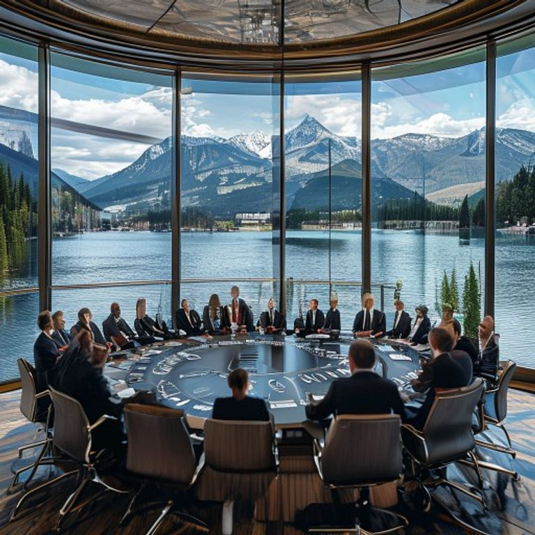
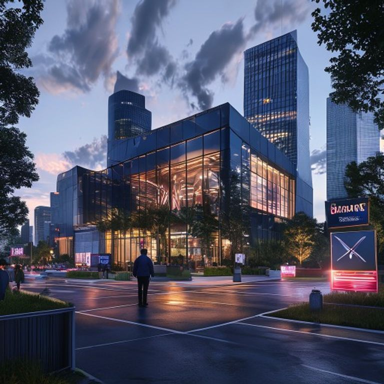

01
中美商务部长会谈 同意建立出口管制对话机制
中国商务部部长王文涛与美国商务部长雷蒙多举行视频会谈，双方同意建立出口管制常态化对话机制，就半导体、人工智能等关键技术领域的出口管制政策进行定期磋商。会谈被视为中美经贸关系回暖的重要信号，两国还讨论了电动汽车、医疗设备等领域的贸易争端问题。
国际

中国商务部部长王文涛与美国商务部长雷蒙多举行视频会谈，双方同意建立出口管制常态化对话机制，就半导体、人工智能等关键技术领域的出口管制政策进行定期磋商。会谈被视为中美经贸关系回暖的重要信号，两国还讨论了电动汽车、医疗设备等领域的贸易争端问题。
2026年世界杯首场淘汰赛在洛杉矶打响，法国与阿根廷在120分钟内战成2-2平，最终法国在点球大战中4-2战胜阿根廷，晋级八强。法国前锋姆巴佩在第89分钟打进扳平头球，将比赛拖入加时。法国门将迈尼昂在点球大战中扑出两粒点球，当选全场最佳球员。

中国在西昌卫星发射中心成功发射第62颗北斗导航卫星，这是北斗三号系统的最后一颗备份星。卫星进入预定轨道后，将与现有卫星组网运行，进一步提升北斗系统的定位精度和可用性。北斗系统已为全球137个国家和地区提供导航服务，高精度定位服务已进入民用市场。

欧洲议会通过AI法案的首批实施条例，明确禁止在公共场所进行实时远程生物识别，但保留执法机关在特定条件下的使用例外。条例还要求AI系统供应商在欧盟境内指定合法代表，并建立风险评估机制。违规企业将面临最高3500万欧元或全球营业额7%的罚款。
比特币价格突破12万美元大关，再创历史新高，日内涨幅超过8%。分析师认为机构投资者入场和比特币ETF持续净流入是主要推动因素。以太坊同步上涨突破4500美元，整个加密货币市场总市值突破3.5万亿美元。美联储降息预期和地缘政治风险也促使投资者转向数字资产避险。

德国大众汽车集团宣布将在全球范围内裁员1.5万人，其中德国本土裁员约7000人，以应对电动汽车转型带来的成本压力。裁员主要涉及行政和管理岗位，不包括研发和生产部门。大众还宣布将投资600亿欧元用于电动汽车和软件研发，目标是在2030年实现电动车销量占比50%。
日本首相岸田文雄在记者会上宣布辞职，称将在本月底前完成交接。岸田表示自己已完成稳定通胀和重振经济的使命，希望新领导人能带领日本应对少子化等长期挑战。自民党计划在年内举行总裁选举，新总裁将自动成为日本新任首相。民调显示民众对岸田经济政策评价分化。
苹果在全球开发者大会上发布Vision Pro 2头显设备，搭载全新的XR2芯片，电池续航提升至4小时，重量减轻15%。设备支持眼动追踪、手势识别和语音控制，起售价为2999美元。苹果还宣布与迪士尼、漫威合作推出专属内容生态，Vision Pro应用数量已突破5000款。

海南博鳌乐城国际医疗旅游先行区迎来首批海外同步临床试验项目，涉及5款创新药物和2款医疗器械。这些药物在海外已完成二期临床试验，将在乐城与全球同步开展三期试验。中国患者无需出国即可参与国际前沿药物临床试验，标志着中国在创新药临床试验领域与国际接轨。
印度电子和信息技术部报告显示，印度已超越美国成为全球第二大手机生产国，年产量突破3.2亿部。三星、苹果和小米等品牌均在印度设有生产基地，组装代工产业蓬勃发展。印度政府目标是到2027年实现电子产品产值翻番，达到4500亿美元，进一步减少对中国供应链的依赖。

联合国安理会一致通过决议，强烈谴责朝鲜当天发射洲际弹道导弹的行为，要求平壤立即停止所有弹道导弹活动。决议同时呼吁恢复六方会谈，寻求通过外交途径实现朝鲜半岛无核化。中俄在表决中投了赞成票，但呼吁美国取消对朝鲜的制裁措施以重启对话。
上海国际港务集团公布数据，显示上半年上海港集装箱吞吐量达到5000万标准箱，同比增长12%，创历史同期新高。其中，国际航线吞吐量增长15%，中欧班列与上海港的海铁联运业务增长40%。上海港已连续14年位居全球第一大港，持续巩固国际航运中心地位。

世界卫生组织总干事谭德塞宣布，猴痘疫情已不再构成国际关注的突发公共卫生事件，全球疫苗接种和防控措施取得显著成效。过去三个月全球新增病例下降80%，非洲以外的死亡率显著降低。谭德塞同时警告各国保持监测，防止疫情卷土重来。
特斯拉CEO马斯克宣布，Optimus人形机器人已进入量产阶段，年底前将向企业客户交付1000台。Optimus身高1.73米，可负载20公斤物体，主要应用于工厂物料搬运和危险环境作业。特斯拉已收到超过5万台订单，计划2027年向个人消费者开售，定价约2万美元。
中国外交部宣布扩大单方面免签政策，新增8个可免签入境中国的国家，停留时间延长至30天。免签国家总数已达到25个，涵盖欧洲、亚洲和大洋洲的主要旅游客源国。民航局数据显示，免签政策实施以来，入境外国游客数量同比增长65%，有效促进中国旅游业复苏。

澳大利亚储备银行宣布维持基准利率在4.35%不变，符合市场预期。澳央行行长布洛克在记者会上表示，通胀率仍高于目标区间，必要时将毫不犹豫地收紧货币政策。市场预期澳央行可能在8月加息25个基点。澳元对美元汇率短线走高，澳大利亚国债收益率上升。

2024年巴黎奥运会闭幕庆典在香榭丽舍大道举行，来自全球200个代表团的运动员参加巡游。法国总统马克龙、国际奥委会主席巴赫出席闭幕式。本届奥运会共打破35项世界纪录，美国和中国以40金和35金分列奖牌榜前两位。下一届奥运会将于2028年在洛杉矶举行。

OpenAI在开发者大会上推出GPT-5预览版，新增原生3D内容生成能力和增强的多模态理解性能。用户可通过自然语言指令生成3D模型和场景，并支持实时渲染。GPT-5的上下文窗口扩展至200万token，可处理整本书籍和长视频。OpenAI还宣布GPT-5 API价格下调50%，进一步降低开发者使用门槛。

英国能源安全大臣宣布将淘汰煤电的时间表从2035年提前至2030年，以加速实现碳中和目标。英国政府将提供100亿英镑补贴，帮助煤电厂工人转型至可再生能源行业。目前英国可再生能源发电占比已超过50%，去年共关闭8座煤电厂。英国的这一决定获得环保组织广泛赞誉。

全球最大的养老基金日本政府养老投资基金宣布，将首次投资中国国债，预计初始配置比例不超过2%。这是GPIF首次投资中国在岸债券市场，标志着中日金融合作取得突破。分析认为中国债券的高收益率和人民币国际化进程是吸引GPIF的主要原因。
💬 评论区